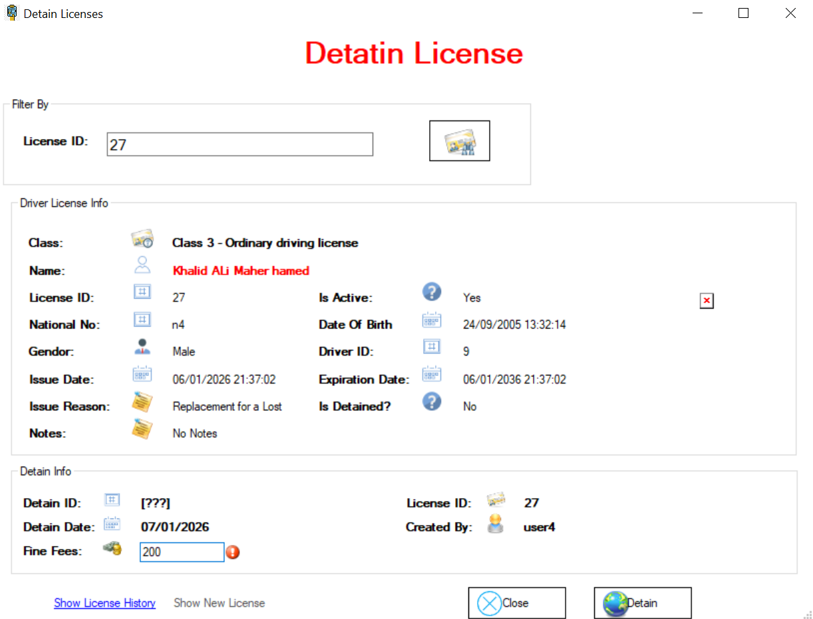
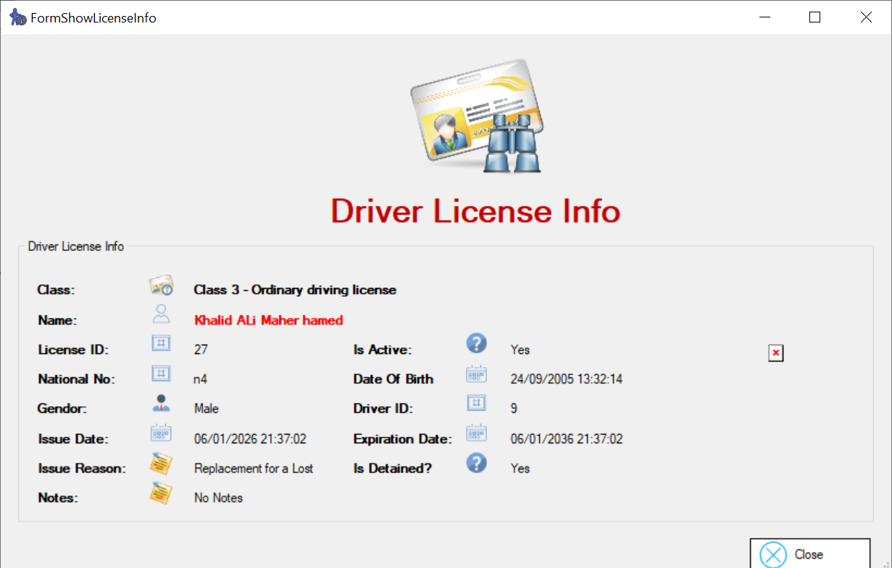

i vous souhaitez bloquer un permis de conduire, rendez-vous dans l'onglet « Detain License ».
Sur cet écran apparaît l'interface Detain License.

Sur cet écran, lorsque nous saisissons une licence introuvable, le système affiche un message d'erreur intitulé « Not Found License » et le bouton Detain peut toujours être désactivé.

Sur cet écran, lorsque nous saisissons une licence inactive ou bloquée, le système affiche un message indiquant « Is Already detained or is not active » et le bouton Detain peut toujours être désactivé.

Sur cet écran, si nous saisissons une licence active et qu'elle n'est pas bloquée, nous pouvons bloquer la licence.

Sur cet écran, nous pouvons inscrire une somme d'argent à payer à cette personne.

Sur cet écran, l'opération semble avoir été effectuée avec succès.

Sur cet écran, le bouton passe à l'état désactivé et le lien « Show new license » est activé pour afficher la licence.

Et sur cet écran, on voit le permis. Sur l'étiquette « Is Detained », il sera oui.

Cet écran affiche l'historique des licences : toutes les licences sont visibles, une licence est sur le point d'expirer, une autre a été déclarée perdue et une est active.